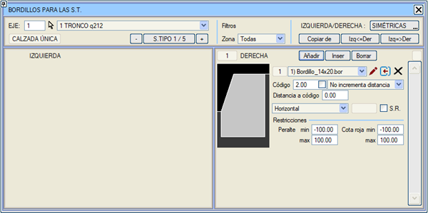
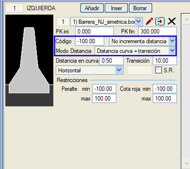
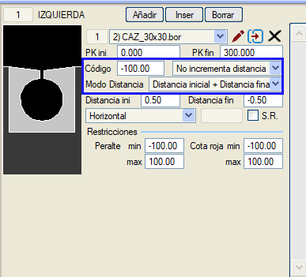
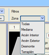
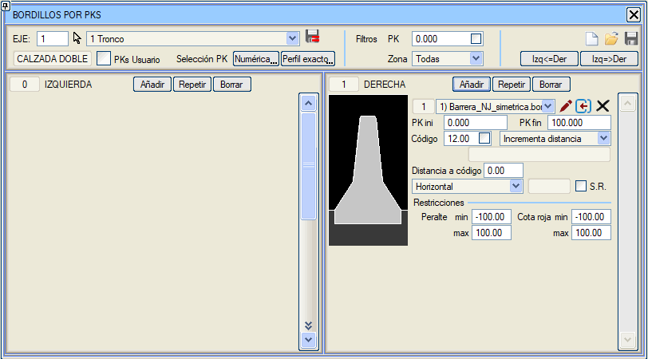
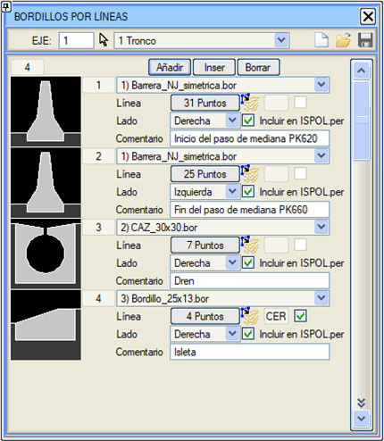

Tip Kesitlere Göre Bordür
Bu menüye erişmek için Düşey Güzergah >
Eklentiler > Tip Kesitler için Bordürler yolunu izlemeliyiz.

Her bir eksenin tip kesitlerinde, platforma eklenecek bordür tipi elemanları ve uygulama şeklini tanımlamayı sağlar:
-
Enine Eğim: Yatay, dever ile, bordüre gelen segmentin eğimi ile veya sabit bir eğim ile.
- A.K.: Eğim durumuna göre anlık kesit.
-
Kod, bordürün ekleneceği başlangıç noktası:
-
2, 11, 12,... gibi kodlar için, koddan dışa doğru eklenir.
-
1, -11,... gibi kodlar için, koddan içe doğru eklenir. Tek platformlu yollarda, kod 1'e eklenen bir bordür bu koddan dışa doğru oluşturulabilir. Bölünmüş yollarda, kod 1'e bir bordür yerleştirirsek içe doğru oluşturulur ve tek hatlı demiryollarında, otoyolların -100 kodlarındaki refüj bordürleri gibi davranır.
-
-100 kodu için. Refüjün tepe noktasında ortalanır. Refüj üzerine yerleştirilmiş bir bordürün yanına, -101 kodu atanarak başka bir bordür yerleştirme imkanı sağlanır. Bu bordür, tanımlandığı kesit tarafında veya simetrik olarak yerleştirilmiş tip kesit bordürleri için her iki tarafta refüj bordürüne (kod -100) bitişik olarak yerleştirilir. Bu, özellikle refüje akan suları toplayacak bir drenaj kanalı olarak bir bordür yerleştirmek istendiğinde kullanışlıdır. Yerleşimini dever > 0 ile sınırlayarak uygun çalışması sağlanabilir.
- Yarma başlangıç noktasına bir bordür eklemek mümkündür. Kod, hendeğin son noktasıyla (1102, 1103, 1104...) çakıştığı için değişken olabileceğinden, standart olarak 1300 kodu kullanılır.
- Refüj üzerine yerleştirilmiş bordürleri (kod -100) kurplarda öteleme imkanı. Bu, Kurp+geçiş mesafesi modudur ve bir "kurptaki mesafe" ve bir "geçiş" uzunluğu belirlenir. Bordür, dairesel kurplarda tanımlanan mesafeye yerleştirilir ve klotoidlerin uzunluğu veya geçiş uzunluğu (hangisi daha büyükse) boyunca refüje doğru ötelenir. Bordür, tanımlandığı kesit tarafından bağımsız olarak kurbun içine doğru ötelenir. Negatif bir mesafe tanımlayarak dışa doğru öteleme imkanı da vardır.

- Başka bir olasılık, bordürün uygulama başlangıç kilometresindeki -100 koduna olan bir başlangıç mesafesi ve bitiş kilometresi için bir bitiş mesafesi tanımlanan Başlangıç mesafesi + Bitiş mesafesi modunu kullanmaktır. İkisi arasında doğrusal bir geçiş yapılacaktır.

- Balast bölgesine bir bordür (veya kanal) eklemek için özel bir durumumuz vardır (sadece kod 3 için): Balastı Artır. Bu durumda balastın omuzu (kod 11) ve topuğu (kod 12) ötelenir, ancak koruyucu tabaka kenarının (kod 13, 100,..) eksene olan mesafesi korunur.
- Refüje bir New Jersey Bariyeri yerleştirilebilir, ancak sadece çatı eğimi ve çatı eğimine geçiş durumunda yerleştirilmesi sağlanabilir. Bunun için kod -100'e yerleştirilir ve minimum deverin maksimum deverden büyük olduğunu belirtiriz.
örn.:
Barrera_NJ_Simetrica.BOR.
Kod -100.
Minimum dever: +2.
Maksimum dever: -2.
- Koda Mesafe: Bordürleri dış banket, yarma ve dolguya ilişkin kodlardan belirli bir mesafeye yerleştirme imkanı. Aynı koddan farklı mesafelere birkaç bordür yerleştirme imkanı da düşünülmüştür. İki veya daha fazla bordürün üst üste gelmesi durumunda, yalnızca en az mesafede bulunan yerleştirilir. Ters çevrilmiş bordürler veya iç bankette bulunanlar için bu imkan düşünülmemiştir. Negatif mesafeler de dikkate alınmaz.
-
Bordür genişliğinin, eklendiği bankette beyan edilen genişliğe eklenip eklenmeyeceği tanımlanır.
-
Minimum ve maksimum dever. Bu aralığın dışında eklenmez, bu da ana platformun suyunun nereye aktığına bağlı olarak hendek veya bordür ekleyip eklememeyi sağlar.
- Bordür yerleşimini kırmızı kota göre sınırlama imkanı.
Bölge:
Bordürleri yarma bölgesine, yani 1301 ile 1399 arasındaki kodlara karşılık gelen bölgeye yerleştirme imkanı. Bu seçenek dever veya kırmızı kot sınırlamasını dikkate almaz.
Bordürün yerleşimini ters çevirmek mümkündür, yani koddan platforma doğru giderler. (1.0'dan büyük kod için içe doğru ve 1.0'a eşit veya küçük kod için dışa doğru.)
Bordürlerin dolgu bölgesine, yani 301 ile 499 arasındaki kodlara karşılık gelen bölgeye yerleştirilmesi sağlanır. Bu seçenek dever veya kırmızı kot sınırlamasını dikkate almaz.
Not: düğmesine tıklayarak bordür tanımını daraltabiliriz.
Plan Çizimi menüsü (Düşey Güzergah'ta bulunur) içindeki .lil Düzenle'de, Bordürler, Tabliyeler sekmesinde bu bordürleri çizme imkanımız vardır.
Kavşak ve dönel kavşakların birleşim geometrileri, çıktıkları eksende tanımlanan bordürleri miras alır.
Katılım Kolu Ekle. Bu elemanları doğru bir şekilde görmek için şu seçeneği kullanmak gerekir: Yeni yüzeyler oluştur.
Bordürler Arası Doğrusal Geçişler
Bordürler arasında şu şekilde geçişler yapılabilir:
Kilometreye Göre Bordür
Bordürlerin uygulaması kilometre aralıklarına göre tanımlanabilir.

Bu menünün tanımı için kullanılan tüm parametreler, Tip Kesitlere Göre Bordürler bölümünde açıklanmıştır.
Çizgilere Göre Bordür
Bordürlerin uygulaması, kılavuz olarak herhangi bir 3B çizgi belirterek çizgilere göre de tanımlanabilir. Bordürün çizginin hangi tarafına (ilerleyiş yönüne göre sağ veya sol) bağlanacağı belirtilebilir. Seçilen çizgi kapalı bir çizgi ise [KPL] etiketi gösterilir ve dönel kavşaklardaki ada bordürlerinden gelen bordürlerde olduğu gibi iç dolguyu oluşturma seçeneğini işaretlemeye izin verilir. Çizginin kapalı olabileceğini belirlemek ve içini doldurma seçeneğine izin vermek için 0.01 m (1 cm) tolerans kabul edilir.
Bu uygulama türüne küçük bir örnek Estructura_Doble.isa örneğinde bulunmaktadır; bu yöntemde bir drenaj kanalına ek olarak bir refüj geçidinin korunması olarak iki New Jersey bariyeri kurulmuştur.
Bu bordürleri ISPOL.per dosyalarına dahil etme imkanı vardır, böylece ilgili enkesitlerde bordürlerle olan kesişim görünür. Bu kesişimler, eksen yeniden metrajlandırıldığında proje hesaplamasına veya Mevcut Proje hesaplamasına dahil edilir.

|